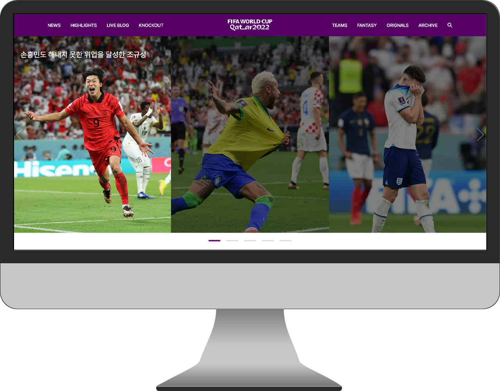

카타르월드컵
홈페이지 리뉴얼- 

01
CONCEPT
카타르 월드컵의 시그니처 컬러와 현장감 있는 스틸컷 그리고 지난 월드컵의 화려한 순간들을
함께 담아보려 노력하였으며 방문자들이 쉽고 빠르게 원하는 정보를 얻을 수 있도록 레이아웃을 구성하였습니다.
02
GRID SYSTEM
- Full Width: 1920px
- Grid Width: 1680px
- Column Width: 116px
- Gutter Width: 40px
- Number of Column: 11

03
TYPOGRAPHY
Montserrat
- 가나다라마바사아자차카타파하
- ABCDEFGHIJKLMNOPQRSTUVWXYZ
- 0123456789
Pretendard
- 가나다라마바사아자차카타파하
- ABCDEFGHIJKLMNOPQRSTUVWXYZ
- 0123456789
04
COLOR SYSTEM
- R 255
- G 255
- B 255
- #FFFFFF
- R 0
- G 0
- B 0
- #000000
- R 0
- G 21
- B 95
- #00155f
- R 85
- G 0
- B 101
- #550065
- R 102
- G 25
- B 116
- #661974
- R 254
- G 216
- B 1
- #fed801
카타르 월드컵의 퍼플 컬러를 메인으로 잡고 그와 어울리는 원색느낌의 컬러들을 조합해
월드컵만의 분위기를 만들어 보았습니다.
월드컵만의 분위기를 만들어 보았습니다.
05
Page Design
Main Page
월드컵의 정보를 빠르게 얻을 수 있는 사이트인 만큼 메인 페이지에 다양한 내용을 담아보았고,
각 섹션에는 주메뉴의 내용을 간략히 담아 방문자에게 이정표가 될 수 있게끔 컨텐츠를 구성했습니다.

06
Page Design
Sub Page
TEAM
07
Responsive
Tablet, Mobile
Tablet

Mobile